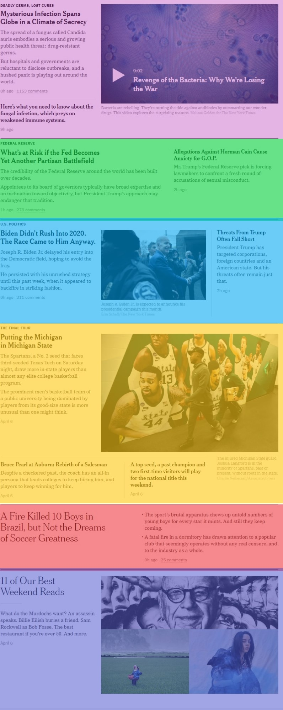

Layout (11/16)
Las noticias principales están divididas en grandes bloques de secciones, como podemos notar. Vamos a darle a estas secciones, si bien son distintas
entre sí, sólo difieren en su contenido, por lo que podemos darle la misma clase para poder darles estilos similares, como borde, padding, etc.
<div class="content">
<main>
<section class="news-container"></section>
<section class="news-container"></section>
<section class="news-container"></section>
<section class="news-container"></section>
<section class="news-container"></section>
<section class="news-container"></section>
</main>
</div>
